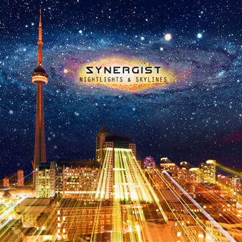

Nightlights and Skylines
by Synergist - Lyrics by CutcH*

let's get carried away, create
extravagent display
when seen from beyond our world
well, the darkness perpherates
with the power to light these skies
comes the blinders on our eyes
when all along these ancient sights have shined
where burning fires are road signs still reaching for the eyes
as the night is falling
they will watch from afar
see the glow from the cities
be replaced by the stars
that great beyond
I keep asking myself
where have they gone?
this relation, the Drake equates
the worlds beyond our skies
the wisdom of ghosts denied... then lost in sands of time
the blinding babel, built so high
the fire scrapes the sky
for all, below, we live without the right
to see beyond the bright and feed that meaning of the night
as the darkness, it conquers the light
they will watch from afar
see the glow from the cities
be replaced by the stars
the great beyond
I feel humbled, myself
I look above
they saw us arise
saw us arrive
with God as a witness they'll see the great decline
feeling alone
to hide in the glow, below
would be like denying myself the rites of old
let's get carried away...
we're only light years away... from home
I'll see you when the darkness falls *CutcH is Craig McCutcheon |